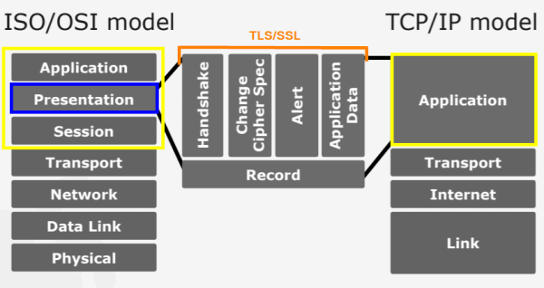

HTTPS protocol
HTTP Secure (HTTPS), or HTTP over SSL/TLS, is a method
to run HTTP which is a clear-text protocol over SSL/TLS, a cryptographic protocol
TLS's first security goal is the "Cryptographic Security"
that provides
Confidentiality in the CIA triad(confidentiality integrity availability).
Because
HTTPS use the
TLS protocol also HTTPS provides
Confidentiality this means that means if an user
on the
same network do a Network eavesdropping, what is possible recognize in a sniffed HTTPS communication?
•
NO→ HTTP Request headers(application layer communication),
body(application layer data), target domain*
•
NO→ HTTP
Response headers(application layer communication), body(application layer data)
•
YES→ Target IP address(*from here we can trace the target domain)
•
YES→ Target port
The encryption layer(TLS/SSL)
anyway just protects data exchanged between client and server but doesn't protect from attacks(like XSS and SQL)
against the application itself(and its
fault)
bibliography:image from “Dan Luedtke” talk,
University of the German Federal Armed Forces, Munich
•
https://www.cloudflare.com/learning/ssl/what-happens-in-a-tls-handshake/